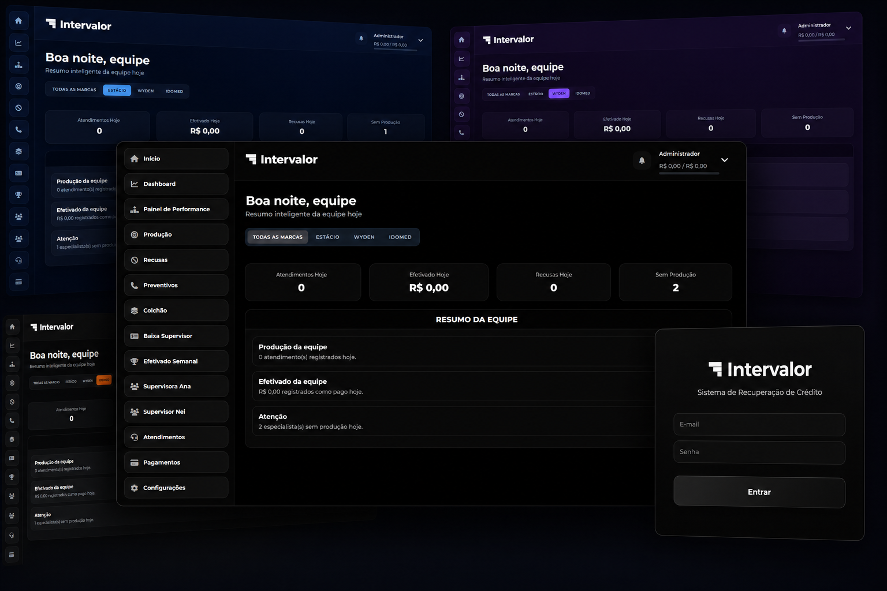
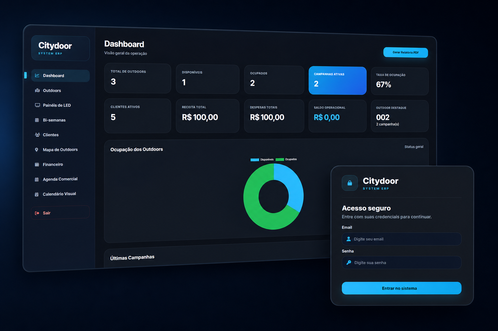
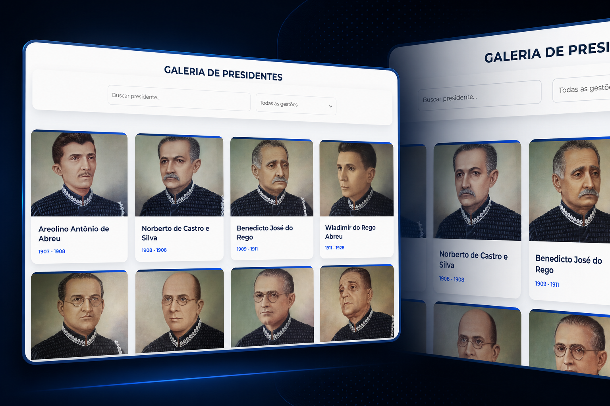
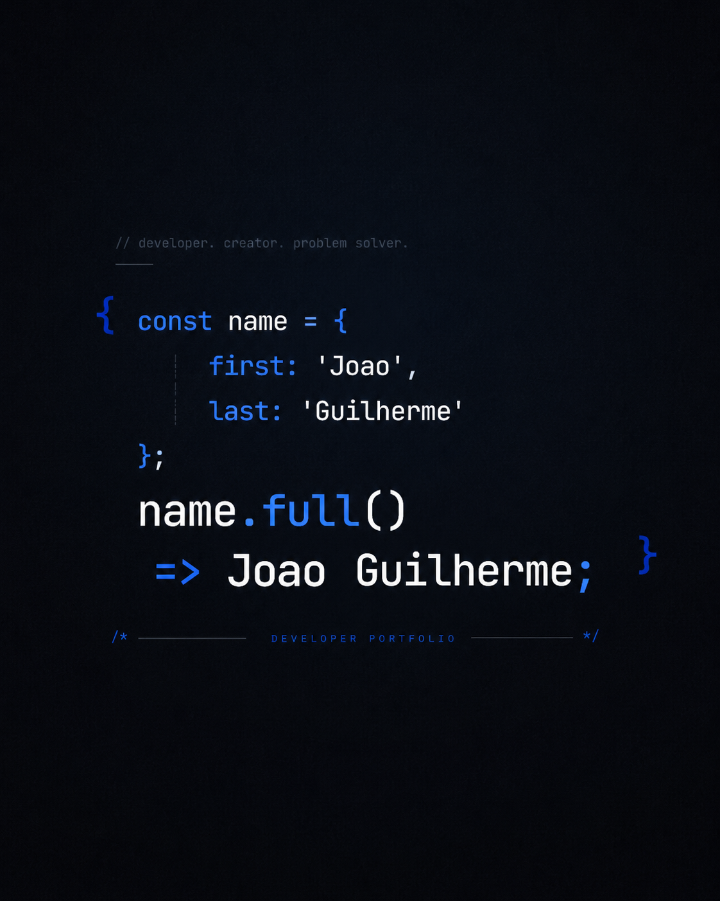

Sistema Intervalor
Plataforma corporativa de gestão e atendimento
Desenvolvo sistemas web, automações e plataformas de gestão que organizam processos, reduzem tarefas manuais e facilitam a rotina de empresas e profissionais.
Minha stack favorita
01 / Projetos selecionados
Uma seleção de projetos em que transformei desafios complexos em experiências simples, bonitas e funcionais.

Plataforma corporativa de gestão e atendimento

Sistema para gestão de mídia exterior

Galeria dos presidentes do Tribunal de Contas do Piauí
02 / Sobre mim

Não desenvolvo apenas páginas. Construo soluções que organizam processos e facilitam decisões.
Sou João Guilherme, desenvolvedor focado em sistemas web, automações e soluções digitais. Transformo problemas reais do dia a dia em plataformas rápidas, organizadas e fáceis de usar, sempre pensando na experiência de quem utilizará o sistema.
Desenvolvo interfaces responsivas, dashboards, sistemas administrativos, integrações e bancos de dados. Acompanho cada projeto desde a ideia e o design até a publicação, manutenção e evolução da solução.
03 / Vamos trabalhar juntos
Estou disponível para projetos freelance, oportunidades e boas conversas sobre tecnologia.
joaog.dev02@gmail.com